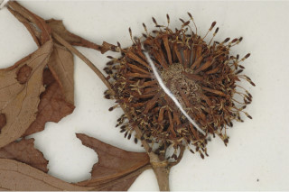
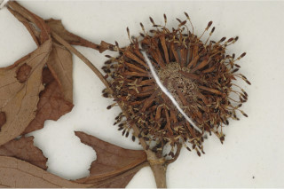

Tamil: Nir-kadambai Malayalam: Vimba, Sirakadambu, Kadamba, Neerkadambu, Poochakadambu, Rose kadambu, Veembu Kannada: Kongu, Nayekadambe English: Kaim English Kannada Malayalam Tamil Botanical descriptions Ecology Distribution Literature Botanical descriptions : Habit : Deciduous trees , up to 20 m tall. Trunk\bark : Bark grey, smooth and thin irregularly scaly when mature. Branchlets : Young branchlets angular to subterete , glabrous . Leaves : Leaves simple , opposite , decussate ; stipules foliacous with keeled back, interpetiolar , caducous and leaving scar ; petioles 1-4 cm long, canaliculate in cross section, glabrous ; lamina 16 x 10 cm, ovate , elliptic-obovate to orbiculate , apex abruptly acuminate with blunt tip, rarely acute , base acute to attenuate to subcordate , margin entire , coriaceous , glabrous ; midrib flat above; secondary_nerves 6-10 pairs, hairy domatia present at axils; tertiary_nerves distantly obliquely reticulo-percurrent . Flowers : Inflorescence terminal head ; flowers sessile , cream-white; calyx lobes short. Fruit& seed : Capsules , arranged in globose heads, each with 2-folicular cocci ; seeds many, winged . Ecology : Trees in semi-evergreen to moist deciduous forests up to 900 m. Distribution : Indomalaysia; in the Western_Ghats- throughout. Literature : Observ. Naucl. Ind. 19. 1839; Gamble, Fl. Madras 2: 585. 1993 (re. ed); Sasidharan, Biodiversity documentation for Kerala- Flowering Plants, part 6: 222. 2004; Cook, Fl. Bombay 1: 581.1903; Almeida, Fl. Maharashtra 3:29. 2001. Top of the Page
N/A
 
